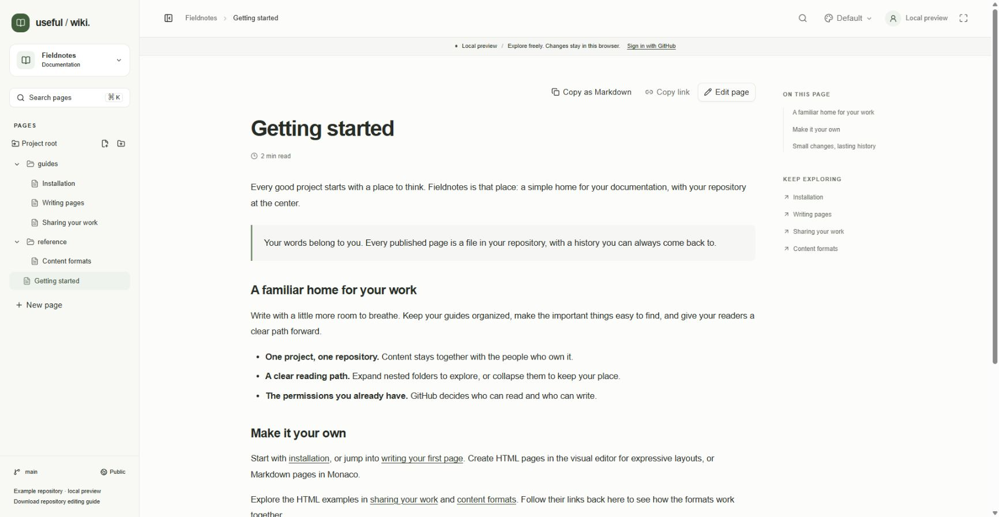

Useful Wiki lets you read and edit documentation stored in ordinary GitHub repositories. Your files, history, and permissions stay in GitHub. This public repository is also the content for Useful Wiki's own documentation: the pages you read are editable HTML files.
Start with getting started to explore the preview, sign in, connect a repository, and publish a first page. Then learn writing and saving, page and folder organization, and sharing and permissions.
The editor supports text formatting, headings, lists, checklists, quotes, code, tables, columns, tabs, and images. Follow the detailed guides below for each workflow. Existing Markdown and rich JSON pages also remain supported.

Open a page to read it alongside the folder tree and its section links. This screenshot shows the Fieldnotes local preview.
Screenshots labeled Local preview show the application's built-in examples. Their Save preview action stores edits in that browser. In a connected project, Save to repository creates a Git commit.
Start with running locally for a credential-free preview, then configure your own GitHub OAuth App and PocketBase instance when you need real repositories. Read architecture and trust boundaries before changing authentication or persistence, and use contributing for the repository boundaries and validation commands.
Documentation work needs no application build. You can edit these HTML files directly, including with a coding agent, using the repository editing guide. Keep instructions tied to behavior verified in the application source and interface.
00 · Welcome — How the documentation is organized.
01 · Getting started — Preview, sign-in, dashboard, project registration, and first save.
02 · Writing pages — Create and edit pages, save commits, and recover drafts.
03 · Organizing pages — Folders, indexes, filename order, moves, renames, and deletion.
04 · Sharing and access — Page links, public and private access, GitHub permissions, and collaboration limits.
05 · Troubleshooting — Resolve sign-in, save, conflict, upload, search, and navigation problems.
06 · Editing from your repository — Write portable HTML, preserve layouts, and coordinate browser and Git edits.
07 · Running locally — Install the app, configure your own services, and prepare a deployment.
08 · Architecture — Understand sources of truth, authorization, revisions, assets, and code boundaries.
09 · Contributing — Improve docs or code and validate the changed behavior.
10 · Rich text and layouts — Use formatting, lists, code blocks, tables, columns, and tabs.
11 · Images and links — Upload and resize images, write alt text, and connect pages.
12 · Markdown and portable files — Edit Markdown source, copy page content, and keep formats portable.
13 · Navigation and search — Browse Documentation and Wiki views, headings, search, related pages, and backlinks.
14 · Appearance and shortcuts — Choose themes, adjust the workspace, and use keyboard controls.
Project registration adds metadata without changing the repository's files.
Useful Wiki currently saves directly to the configured branch. It has no in-app pull-request workflow, suggestions, automatic conflict merging, or live co-editing. Keep a draft when a save fails, and reconcile competing changes before trying again.